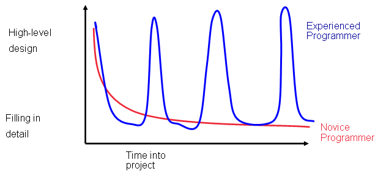
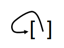

A student who's doing this course online emailed us a question:
I want to save the state of my program every few hours so I can re-start it later. What's the best format for doing this?
There's no simple or single answer, but exploring the options is a natural way to introduce a few more programming ideas.
First, let's suppose the program's state is a list of real numbers, which could represent something like the temperature at each point along a line. Our data file looks like this:
1.0 1.1 1.015 1.23
and so on, with one value per line—or in other words, with a newline character as a separator between numbers. It's trivial to write functions that will store and load such a list:
def save(filename, vector):
writer = open(filename, 'w')
for value in vector:
print >> writer, value
writer.close()
def load(filename):
reader = open(filename, 'r')
vector = []
for line in reader:
value = float(line.strip())
vector.append(value)
reader.close()
return vector
What if the program's state is a two-dimensional matrix instead of a vector? If the matrix is a list of lists in our program, our functions are almost as simple as the vector versions:
def save(filename, matrix):
writer = open(filename, 'w')
for row in matrix:
for value in row:
print >> writer, value, # suppress the newline
print >> writer # print a newline
writer.close()
def load(filename):
reader = open(filename, 'r')
matrix = []
for line in reader:
temp = []
line = line.strip().split()
for entry in line:
value = float(entry)
temp.append(value)
matrix.append(temp)
reader.close()
return matrix
and so are our data files:
1.0 1.015 1.212 1.224 1.30 1.325 1.39 1.447 1.676 1.9 1.81 2.001
save prints each row of the matrix on a single line. (Remember: a trailing comma in a print statement suppresses the newline Python would normally print, while print with no arguments just prints a newline.) load reads those lines, splits them on whitespace, and converts the fragments from strings to numbers, building up a list-of-lists as it goes. Another way of looking at it is that we use newline as a row separator, but a single space as a column separator.
These functions work, but they wouldn't meet most programmers' standards. To see why, imagine that our file is improperly formatted:
1.0 2.0 3.0 4.0 5.0 7.0 8.0 9.0
A value is missing from the second row, but our load function won't care: it will happily return an irregular list-of-lists. The program that uses this matrix might blow up later on, but (a) then we'd have to spend time working backwards from the point of failure, which might be thousands of lines later, and (b) the program might not actually blow up, but instead just produce the wrong answer.
Since "silent failures" are the worst possible outcome, we'd like to fail early and fail often, so let's modify load to catch this case. The change is highlighted:
def load(filename):
reader = open(filename, 'r')
matrix = []
for line in reader:
temp = []
line = line.strip().split()
for entry in line:
value = float(entry)
temp.append(value)
if len(matrix) > 0:
assert len(temp) == len(matrix[0]), \
'Rows are not the same length'
matrix.append(temp)
reader.close()
return matrix
Whenever we construct a new sub-list, we check if there are already any rows in matrix. If there are, we compare the length of the new row to the length of the zero'th row of matrix, and halt with an error if they're different. Doing this ensures that all rows have the same length as the first row we read.
If we're going to check input, let's check output as well. This doesn't guarantee data files will always be correct, since someone could modify them in a text editor outside our program, but it does reduce the risk.
def save(filename, matrix):
writer = open(filename, 'w')
for row in matrix:
assert len(row) == len(matrix[0]), \
'Rows are not the same length'
for value in row:
print >> writer, value,
print >> writer
writer.close()
Again, the change is highlighted in bold, and again, we check the length of each row against the length of the zero'th row. And yes, the first time through the loop we will check the zero'th row's length against itself, but it's simpler (and probably more efficient) to do that unnecessary calculation than to avoid it.
Our functions now check the lengths of rows, but what if entire rows are missing? Or what if we saved the state of the program when it was running for a 780×780 case, but mistakenly try to load that file when we're doing an 870×870 calculation? The solution that almost every file format uses is to add some metadata that describes the rest of the data. In our case, the metadata is simply the dimensions of the matrix as a pair of integers on the first line of the file:
def save(filename, matrix): writer = open(filename, 'w') print >> writer, len(matrix), len(matrix[0]) for row in matrix: assert len(row) == len(matrix[0]), \ 'Rows are not the same length' for value in row: print >> writer, value, print >> writer writer.close() def load(filename): reader = open(filename, 'r') dims = reader.readline().strip().split() num_rows = int(dims[0]) num_cols = int(dims[1]) matrix = [] for line in reader: temp = [] line = line.strip().split() assert len(line) == num_cols, \ 'Wrong number of columns in line %d' % num_lines for entry in line: value = float(entry) temp.append(value) matrix.append(temp) reader.close() assert len(matrix) == num_rows, \ 'Wrong number of rows' return matrix
Before we move on, let's tidy up load a bit. Recent versions of Python support list comprehension: instead of using a loop to operate on a list element by element, we can write an expression that does the work for us. For example, if stuff is a list of integers, then:
[x**2 for x in stuff if x > 3]
creates a list of of the squares of the values in stuff that are greater than 3. Let's use list comprehension to shorten load a bit:
def load(filename): reader = open(filename, 'r') num_rows, num_cols = [int(x) for x in reader.readline().strip().split()] matrix = [] for line in reader: temp = [float(x) for x in line.strip().split()] assert len(temp) == num_cols, \ 'Wrong number of columns in line %d' % num_lines matrix.append(temp) reader.close() assert len(matrix) == num_rows, \ 'Wrong number of rows' return matrix
List comprehensions are a bit harder to read when you first encounter them, but so are most abbreviations, and since they're becoming more widely used, it's worth getting to know them.
Saving metadata in the file has another benefit. Suppose our program stores its state in two matrices, not one—or in five, or in three matrices and a pair of vectors. Without metadata about their sizes, our function would have no way to know when to stop reading the current object and start reading the next, so we'd have to put each data structure in a file of its own. With metadata, it's easy—there is no ambiguity at all in a file like:
3 2 1.0 2.0 3.0 4.0 5.0 6.0 1 4 100.0 200.0 300.0 400.0 2 1 1000.0 2000.0
How should we change our functions to do this? One option is to pass a list of matrix to save:
def save(filename, stuff):
writer = open(filename, 'w')
for matrix in stuff:
print >> writer, len(matrix), len(matrix[0])
for row in matrix:
assert len(row) == len(matrix[0]), \
'Rows are not the same length'
for value in row:
print >> writer, value,
print >> writer
writer.close()
Reading is a bit trickier, since we have to look ahead one line to find out if we're at the end of the file or not. The function below does this, and returns a list of matrices to its caller:
def load(filename):
reader = open(filename, 'r')
results = []
line = reader.readline() # prime the pump
while line: # exit loop at end of file
num_rows, num_cols = [int(x) for x in line.strip().split()]
matrix = []
for line in reader:
temp = [float(x) for x in line.strip().split()]
assert len(temp) == num_cols, \
'Wrong number of columns in line %d' % num_lines
matrix.append(temp)
assert len(matrix) == num_rows, \
'Wrong number of rows'
results.append(matrix)
line = reader.readline() # look for start of next matrix
reader.close()
return results
This "lookahead" pattern comes up all the time when reading data. We could avoid the need for it by starting the file with some more metadata, namely the number of matrices the file is supposed to contain. In fact, that seems like a good idea anyway, since it allows more error checking, so let's do that instead:
def save(filename, stuff): writer = open(filename, 'w') print >> writer, len(stuff) # number of matrices in file for matrix in stuff: print >> writer, len(matrix), len(matrix[0]) for row in matrix: assert len(row) == len(matrix[0]), \ 'Rows are not the same length' for value in row: print >> writer, value, print >> writer writer.close() def load(filename): reader = open(filename, 'r') results = [] num_matrices = int(reader.readline().strip()) # number of matrices in file for m in range(num_matrices): num_rows, num_cols = [int(x) for x in line.strip().split()] matrix = [] for line in reader: temp = [float(x) for x in line.strip().split()] assert len(temp) == num_cols, \ 'Wrong number of columns in line %d' % num_lines matrix.append(temp) assert len(matrix) == num_rows, \ 'Wrong number of rows' results.append(matrix) reader.close() return results
We may also want to modify these functions to handle vectors along with matrices, since right now they only work for two-dimensional list-of-lists structures. We'll revisit that point below.
We can still improve these functions, though. If you have gone through the lecture on testing, you will have seen that it's important to design for test, i.e., to write code in a way that makes testing easier and more reliable. We can apply that idea here by having the save and load functions take open file objects as parameters instead of filenames; that way, we can use stringIO objects (that read from or write to strings instead of files) for testing. Let's do that:
def save(writer, stuff):
print >> writer, len(stuff)
for matrix in stuff:
print >> writer, len(matrix), len(matrix[0])
for row in matrix:
assert len(row) == len(matrix[0]), \
'Rows are not the same length'
for value in row:
print >> writer, value,
print >> writer
def load(reader):
results = []
num_matrices = int(reader.readline().strip()) # number of matrices in file
for m in range(num_matrices):
num_rows, num_cols = [int(x) for x in line.strip().split()]
matrix = []
for line in reader:
temp = [float(x) for x in line.strip().split()]
assert len(temp) == num_cols, \
'Wrong number of columns in line %d' % num_lines
matrix.append(temp)
assert len(matrix) == num_rows, \
'Wrong number of rows'
results.append(matrix)
return results
We can now test our code like this:
from StringIO import StringIO Data = '''2 1 1 1.0 2 2 2.0 3.0 4.0 5.0''' def test_one_two(): reader = StringIO(Data) result = load(reader) assert len(result) == 2 first = result[0] assert len(first) == 1 assert len(first[0]) == 1 assert first[0][0] == 1.0 second = result[1] ...etc...
Now, what if our program's state is integers rather than floating point numbers? Or complex values? We could pick one and stick to it, but we'd really like to be able to re-use our save-and-load functions elsewhere. One option is to require the user to tell us how to do the conversion using some sort of flag. To keep things simple, we'll switch back to one matrix per file for the moment:
def load(reader, data_type):
num_rows, num_cols = [int(x) for x in reader.readline().strip().split()]
matrix = []
for line in reader:
if data_type == 'i':
temp = [int(x) for x in line.strip().split()]
elif data_type == 'f':
temp = [float(x) for x in line.strip().split()]
elif data_type == 'c':
temp = [complex(x) for x in line.strip().split()]
else:
assert False, 'Unknown data type "%s"' % data_type
assert len(temp) == num_cols, \
'Wrong number of columns in line %d' % num_lines
matrix.append(temp)
assert len(matrix) == num_rows, \
'Wrong number of rows'
return matrix
Again, this works, but wouldn't meet most programmers' standards. The warning sign is the if/elif/else: we're using a flag to select a function, and if we decide to add another data type, we'll have to modify this function. Good functions obey the Open/Closed Principle: they are open for extension, but closed for modification. Putting it another way, it should be possible to extend a function's behavior in plausible ways without rewriting it.
How can we do that here? Simple: have the user pass in the function that's to be used to convert the strings read from the file. Remember, a function is just another kind of data, one that happens to be made up of instructions instead of characters or integers or colors:
def load(reader, converter):
num_rows, num_cols = [int(x) for x in reader.readline().strip().split()]
matrix = []
for line in reader:
temp = [converter(x) for x in line.strip().split()]
assert len(temp) == num_cols, \
'Wrong number of columns in line %d' % num_lines
matrix.append(temp)
assert len(matrix) == num_rows, \
'Wrong number of rows'
return matrix
We can then call this function using:
reader = open('myfile.dat', 'r')
matrix = load(reader, float)
or:
reader = open('myotherfile.dat', 'r')
matrix = load(reader, int)
or however else we want.
But hang on: how do we know what conversion function to pass in? Turning the question around, if we're storing the dimensions of the matrix in the file, shouldn't we also store some indicator of the data's type? If we only have to support a fixed set of types, we can store the name of the conversion function along with the dimensions, then use that to look up the function we want. For example, if our file is:
float 3 2 1.0 2.0 3.0 4.0 5.0 6.0
then our load function would be:
def load(reader):
converters = {
'int' : int,
'float' : float,
'complex' : complex
}
metadata = reader.readline().strip().split()
type_name = metadata[0]
assert type_name in converters,
'Unknown type name "%s"' % type_name
converter = converters[type_name]
num_rows = int(metadata[1])
num_cols = int(metadata[2])
matrix = []
for line in reader:
temp = [converter(x) for x in line.strip().split()]
assert len(temp) == num_cols, \
'Wrong number of columns in line %d' % num_lines
matrix.append(temp)
assert len(matrix) == num_rows, \
'Wrong number of rows'
return matrix
Looking at the change more closely:
converters maps function names to functions.Unfortunately, we're violating the Open/Closed Principle again. It's easier to add or change a dictionary entry than to hunt through if's and elif's, but we would still have to modify this function's internals to handle another data type...
...unless, of course, the dictionary of conversion functions was passed into the function from outside. Let's create a Python file called saveload.py that defines three things:
Conversions = {
'int' : int,
'float' : float,
'complex' : complex
}
def save(writer, matrix, converters):
...exercise for the reader...
def load(reader, converters):
...as above...
If we want to add another conversion function—say, for fractions—all we do is add an entry to Conversions in our own program:
import saveload
def fraction(text):
...convert a string like '12/17' to a number...
saveload.Conversions['fraction'] = fraction
writer = open('myfractionfile.dat')
matrix = saveload.load(writer, saveload.Conversions)
writer.close()
In fact, we should add two functions: one to convert strings to values, and one to convert values to strings. We'll leave that as an exercise too.
This is a very powerful technique, which you will see used in many different contexts. The library (in this case, saveload.py) creates a registry of the things it knows how to do. If we want to add new behavior, all we do is add entries to that registry: we don't have to edit, or even read, the internals of the functions in the library. We can simplify this even further if we want to:
Conversions = {
'int' : int,
'float' : float,
'complex' : complex
}
def save(writer, matrix, converters=Conversions):
...
def load(reader, converters=Conversions):
...
Here, we're making use of the fact that Python allows us to define default parameter values. If we call save and load without passing anything in for converters, Python will pass in Conversions on our behalf.
I would still take marks off if a student submitted the code shown here for an assignment, or bounce it if it was submitted for code review. Good file formats support comments and blank lines, and really good ones allow people to embed provenance information in the data itself, rather than hiding it in comments. As an exercise, modify saveload.py so that it will write and read files that look like this:
# Created by Monsterator 4.7 $Revision: 31$ # alpha float 3 2 1.0 2.0 3.0 4.0 5.0 6.0 # beta float 1 4 100.0 200.0 300.0 400.0 # gamma int 2 1 1000 2000
Let's tackle a slightly different problem next. Suppose our data has a mix of types, like a table of biographical data:
| 'Newton' | 'Isaac' | 1642 | 1727 |
| 'Darwin' | 'Charles' | 1809 | 1882 |
| 'Turing' | 'Alan' | 1912 | 1954 |
We could use our matrix format:
3 4 Newton Isaac 1642 1727 Darwin Charles 1809 1882 Turing Alan 1912 1954
but look what happens when we try to store information about John Maynard Smith:
Maynard Smith John 1920 2004
Oops: the space in Maynard Smith's double-barrelled surname is going to break our code. We could try using a separator that's never supposed to appear in the representation of any value, like a comma:
4 4 Newton,Isaac,1642,1727 Darwin,Charles,1809,1882 Turing,Alan,1912,1954 Maynard Smith,John,1920,2004
but this isn't a general solution: as soon as we switch from people's names to (for example) quotations or paper abstracts, we need to be able to store any character that can ever appear in text, which means there isn't a "safe" separator.
We can solve this problem the same way programming languages do: by using escape sequences for characters that have special meanings. For example, we could use the two character sequence "\ " (backslash space) to indicate that a space in the data file is just a space, not a separator:
4 4 Newton Isaac 1642 1727 Darwin Charles 1809 1882 Turing Alan 1912 1954 Maynard\ Smith John 1920 2004
The code that reads lines is pretty simple:
for line in reader:
fields = line.strip().split()
temp = [fields[0]]
for f in fields[1:]:
if temp[-1][-1] == '\\':
temp[-1] += f
else:
temp.append(f)
This turns the line:
'Maynard\ Smith John 1920 2004\n'
into the list ['Maynard\', 'Smith', 'John', '1920', '2004'], then moves list entries from fields to temp, concatenating as it goes when it finds that a preceding entry has a trailing '\'.
You can probably guess how we're going to handle conversions from strings to other types. Instead of having a single format name in the metadata at the top of the table, we have as many converters as there are columns in our data:
4 4 string string int int
Newton,Isaac,1642,1727
Darwin,Charles,1809,1882
Turing,Alan,1912,1954
Maynard Smith,John,1920,2004
There's a (solvable) problem with this, though: how do we know how many fields in the metadata are dimensions, and how many are types? We can find out by trying to convert fields to integers one by one until something fails, and assume that's the start of the type list, but it's simpler and more robust to either:
The first option gives us headers like this:
2 4 4 string string string int
while the second gives us:
4 4 | string string string int
The data we have looked at so far has all consisted of multiple values of the same shape, each independent of the rest. If we really want to save a program's state, though, we have to handle much more general data structures. Suppose, for example, that our program's state consists of a list of lists:
state_0 = [[1, 2], [3, 4]]
If it always consists of exactly one list with exactly two sublists, each of which has exactly two elements, persistence is pretty simple. But what if our program's state sometimes looks like this:
state_1 = [[1, 2, 3], [4]]
or like this:
state_2 = [[1, 2], [3, [4]]]
What we really want is a general-purpose persistence tool that can save arbitrary Python data structures to files and then read them back.
To start with, let's figure out how to handle atomic values like numbers and strings, and built-in containers like lists and dictionaries. Our first function looks like this:
def save(writer, obj):
if type(obj) in Atomic_Types:
save_atomic(writer, obj)
elif type(obj) in Sequence_Types:
save_sequence(writer, obj)
elif type(obj) in Dict_Types:
save_dict(writer, obj)
else:
raise ValueError("Bad type: " + `t`)
The logic is pretty simple: we use the built-in type function to get the type of the object we're persisting, then hand the object off to a specialized function that knows how to deal with that type. Our tests depend on the following tables:
from types import *
Atomic_Types = {BooleanType, FloatType, IntType, NoneType, StringType, UnicodeType}
Sequence_Types = {ListType, TupleType}
Dict_Types = {DictType}
How do we save atomic values? Simple: we write out the name of the type, followed by the Python representation of the value.
def save_atomic(writer, obj): print >> writer, repr(obj)
repr is a built-in Python function that generates a string representation of its argument. The difference between it and str is that repr's output is exactly what Python needs to parse to re-create the object in question. The main difference is in string handling: str('a') is just the string 'a', while repr('a') is the three-character string "'a'". And yes, the double quotes are confusing: they're needed to show that the string (the stuff between the double quotes) is three characters long, and that the first and last characters are single quotes.
All right, how do we save sequences (lists and tuples)? Here's the code:
Braces = {
ListType : ( '[', ']' ),
TupleType : ( '(', ')' )
}
def save_sequence(writer, seq):
open, close = Braces[type(seq)]
print >> writer, open
for element in seq:
persist(writer, element)
print >> writer, close
Again, the logic is pretty simple: we pick opening and closing braces based on the sequence's type (list or tuple), then print them out with the sequence's values in between. How do we get the values out? Simple: we just call the top-level function persist.
This is the point where some people balk. "How can we call persist? We're already calling it!" Well, yes and no: by the time we get into save_sequence, there will be a call to persist somewhere below us on the stack, but so what? Each call to a function automatically creates its own local variables; there's no danger of confusing those belonging to the next call with those belonging to the last.
Our last function, save_dict, looks a lot like save_sequence. There's only one style of bracing, and we have to save two objects for each entry (the key and the value), but those are pretty simple modifications:
def save_dict(writer, d):
print >> writer, '{'
for key in d:
persist(writer, key)
persist(writer, assoc[key])
print >> writer, '}'
How are we doing so far?
test = {
1 : 'two',
(3, 'four') : [5, [6, 7]],
'eight' : {9 : 10}
}
persist(sys.stdout, test)
{
(
3
'four'
)
[
5
[
6
7
]
]
1
'two'
'eight'
{
9
10
}
}
So much for output: how do we read it back in? The answer to that question is going to reveal a problem with the format we've designed so far, so let's sketch it rather than doing a full implementation. The starting point is a load function:
def load(reader):
line = reader.readline().rstrip()
if line == '(':
result = load_sequence(reader, (), ')')
if line == '[':
result = load_sequence(reader, [], ']')
elif line == '{':
result = load_association(reader, {}, '}')
else:
result = load_atomic(line)
return result
Yes, if we were doing this for real, we'd put those string constants in a lookup table, but we're just sketching... What does load_sequence look like?
def load_sequence(reader, result, close):
line = reader.readline().rstrip()
while line != close:
val = load(reader)
result.append(val)
return result
There are at least two things wrong with this. The first is that it doesn't work for tuples: we can't append values to an existing tuple the way we can for lists. Fine, we can fix that by always constructing a list, then converting to a tuple at the end. But there's a much bigger problem, one that isn't as easy to solve. Suppose our input is:
[ 1 ]
The initial call to load reads the opening '[' and calls load_sequence. That function reads the '1', decides that it isn't a closing ']', and calls load to read the list's contents. That second call to load then reads the closing ']', because the '1' has already been read by load_sequence. Kaboom: load blows up because it's expecting load_sequence to handle closing brackets, and the value in the list is lost.
The root of the problem is that once again we need to look ahead one element to tell if we're at the end of a list (or tuple, or dictionary). We can do this by passing the line most recently read as a parameter to every function we call:
def load(reader, next_line): if line == '(': result = load_sequence(reader, (), ')', reader.readline()) if line == '[': result = load_sequence(reader, [], ']', reader.readline()) elif line == '{': result = load_association(reader, {}, '}', reader.readline()) else: result = load_atomic(line) return result def load_sequence(reader, result, close, next_line): while next_line != close: val = load(reader, next_line) result.append(val) next_line = reader.readline() return result
This code is significantly more complicated than what we started with—complicated enough that there's still at least one bug lurking in what we've written so far. (As an exercise, see if you can trace through the program's execution for nested lists and find it.)
So let's step back and re-evaluate. Our format uses human-friendly brackets and parentheses, even though these files are intended for machines to read and write. What if we switch to this:
dict 3
tuple 2
. 3
. "four"
list 2
. 5
list 2
. 6
. 7
. 1
. "two"
. "eight"
dict 2
. 9
. 10
That's a lot harder for human beings to read (quick, what's the second item in the dictionary?). But it turns out to be a lot easier for computers to read:
def load(reader):
typename, value = reader.readline().strip().split(' ', 1)
if typename = '.':
result = eval(value)
elif typename == 'list':
count = int(value)
result = load_seq(reader, count)
elif typename == 'tuple':
count = int(value)
result = tuple(load_seq(reader, count))
elif typename = 'dict':
count = int(value)
result = load_dict(reader, count)
return result
def load_seq(reader, count):
result = []
for i in range(count):
value = load(reader)
result.append(value)
return result
That's a lot simpler, isn't it? To load atomic values, we just evaluate their string representation. For everything else, the file itself tells us how many entries to read—there's no need to look ahead for an end-of-collection marker.
There are two lessons here. The first is that what's easy for human beings to work with is often hard for machines to handle, and vice versa. We're bad at counting but very good at interpreting context; machines find context very hard, but counting trivial. If something really has to be written and read by both, pick whatever is easy for people, and figure out how to get the computer to understand it. If people aren't ever going to view or edit data, though, then choose formatting rules to simplify programming.
The second lesson is about the design process. Experienced designers tend to work in a sawtooth pattern: they make a few high-level decisions, see what the implications are for implementation, then use what they've learned to fix design problems right away. Novices, on the other hand, tend to make some high-level decisions early on, then stick to them no matter what, which means they often spend working around things that could be avoided entirely. Musicians talk about learning from their instruments; good programmers do the same thing.

At this point I need to apologize, because I cheated a bit in the previous example. Let's look more closely at the first few lines of load:
def load(reader):
typename, value = reader.readline().strip().split(' ', 1)
if typename = '.':
result = eval(value)
...
That function eval seems to be turning a string into—well, into pretty much anything, since this branch of the code handles all of the basic types. Let's explore a little:
>>>eval('1')
1
>>>eval('1 + 2.3')
3.3
>>>eval('[1, 2, 3]')
[1, 2, 3]
eval takes a string containing a legal Python expression and executes it. Equivalently, it does exactly what Python does when it reads a string from the prompt or from a file: it parses that string to produce some Python instructions in memory and then immediately runs those instructions. There's no magic here: this is all built into the Python interpreter, just like string concatenation or floating point multiplication. It only seems strange because compiled languages like C, Fortran, and Java separate the two phases of "compile the program" and "run the program", where interpreted languages like Python, MATLAB, and Ruby combine the two.
So let's try this:
>>>repr(1) '1' >>>text = repr(1) >>>eval(text) 1 >>>repr([1, 2, 3]) '[1, 2, 3]' >>>text = repr([1, 2, 3]) >>>eval(text) [1, 2, 3]
Right: repr produces a string holding exactly what you have to put in a Python program to produce its argument, and eval evaluates such a string. So how about this as a persistence mechanism:
def save(writer, data): writer.write(repr(data)) def load(reader): eval(reader.read())
It can't be that simple, can it? Let's see:
>>> from StringIO import StringIO
>>> data = [1, 'two', {'three' : 4}, [5, 6]]
>>> writer = StringIO()
>>> save(writer, data)
>>> text = writer.getvalue()
>>> text
"[1, 'two', {'three' : 4}, [5, 6]]"
It seems to be saving properly; what about restoring?
>>> reader = StringIO(text)
>>> load(reader)
[1, 'two', {'three' : 4}, [5, 6]]
Again, there is no magic here. Python's repr is doing exactly what we did when we wrote our earlier save function: it is walking through the data structure recursively, writing out items as it finds them. eval is more complicated than our earlier load, but only because it knows how to do arithmetic and other calculations. If all eval had to do was load data structures, it would look a lot like our load function.
But there is one more wrinkle. Let's try this:
>>> x = [] >>> x.append(x)
These two innocuous lines of code create the following data structure:

What happens if we give it to repr?
>>> repr(x)
'[[...]]'
That "..." is Python's way of saying, "I give up." In order to save the list, it has to save the item in the list. In order to save that item, it has to save the list, because the only item in the list is the list.
This example seems pretty artificial, so let's look at another. Let's use dictionaries to represent early kings of France:
>>> chlodio = {'name' : 'Chlodio the Longhair', 'from' : 428, 'to' : 448}
>>> merovech = {'name' : 'Merovech', 'from' : 448, 'to' : 457}
>>> childeric = {'name' : 'Childeric I', 'from' : 457, 'to' : 481}
Good so far. Now add some links:
>>> chlodio['heir'] = merovech >>> merovech['heir'] = childeric >>> childeric['heir'] = None # was actually Clovis I, but never mind for now
No problem yet, so let's keep going. (This is an example of Peter's Programming Principle: software tends to expand until it breaks.)
>>> childeric['father] = merovech >>> merovech['father] = chlodio >>> chlodio['father] = None # was actually Theudemeres, but never mind that either
This is a perfectly reasonable structure, but once again, it's circular: in order to save chlodio, we have to save merovech, but to save merovech, we have to save chlodio. Python's repr function detects this and prints "..." to say, "Can't help you." Our earlier load function, in contrast, would just keep calling itself until it had used up all the memory set aside for the function call stack, at which point Python would fall over.
The solution? Keep track of things we have already saved, and if we encounter them again, print out a marker that means, "Already done that." Again, to keep things readable, we'll only look at the case of arbitrarily-nested lists of integers: we'll ignore floats, strings, tuples, dictionaries, and everything else for the moment.
That solution has three parts. The first simply gets the ball rolling:
def save(writer, thing): save_recursive(writer, thing, [])
The second part, save_recursive, does most of the hard work. It checks to see whether the thing we're trying to save has already been seen, i.e., if this is the second (or third, or fourth...) time we've encountered an aliased object. If it is, we write "recycle", followed by a sequence number that uniquely identifies that thing. We'll see in a minute how these sequence numbers are created, what ensures they're unique, and so on.
If we haven't already seen thing, then it must be either an integer or a list. If it's an integer, we write "int" and its value as we've done before. If it's a list, we write "list" and its length, followed by its elements, which are written by calling save_recursive for each one. Before we do that, though, we append thing to the end of seen to record the fact that we've seen it. That way, if we encounter it again, our first test—the one that looks for things we've already printed out—will say, "Yes, this one has been seen before," and we won't try printing it again.
def save_recursive(writer, thing, seen):
already_seen = look_for(thing, seen)
if already_seen >= 0:
print >> writer, 'recycle', already_seen
elif type(thing) is IntType:
print 'int', thing
elif type(thing) is ListType:
seen.append(thing)
print 'list', len(thing)
for item in thing:
save_recursive(writer, item, seen)
else:
assert False, 'Whoops'
All that's left is to write look_for, the function that checks in seen to see if something has already been printed. If it has, we return its index in seen for save_recursive to print out (along with the word "recycle"). If we haven't seen this thing before, we return -1.
def look_for(thing, seen):
result = -1 # meaning "not found"
try:
location = seen.index(thing)
if seen[location] is thing: # rule out false matches
result = location
except ValueError:
pass # nothing matches
return result
We have to do two checks when looking for thing in seen. The first, seen.index(thing), tells us if something with the same value as thing is in the list; the second, seen[location] is thing, checks whether that value is actually the same object in memory as what we're looking for. This is needed because of this case:
>>> first = [1, 2] >>> second = [1, 2] # same value, different object in memory >>> outer = [first] >>> outer.index(second) 0 >>> outer[0] is second False
And that's pretty much it. We now have all the pieces we need to build functions to save and restore arbitrary chunks of data, of arbitrary types, connected in arbitrary ways. There are lots of ways to generalize it, and to make it faster: for example, by using a dictionary instead of a list to store things we've seen in order to keep search times under control. The standard Python library's pickle module provides a fast, general implementation of all these ideas, and there are other libraries that work across multiple languages.